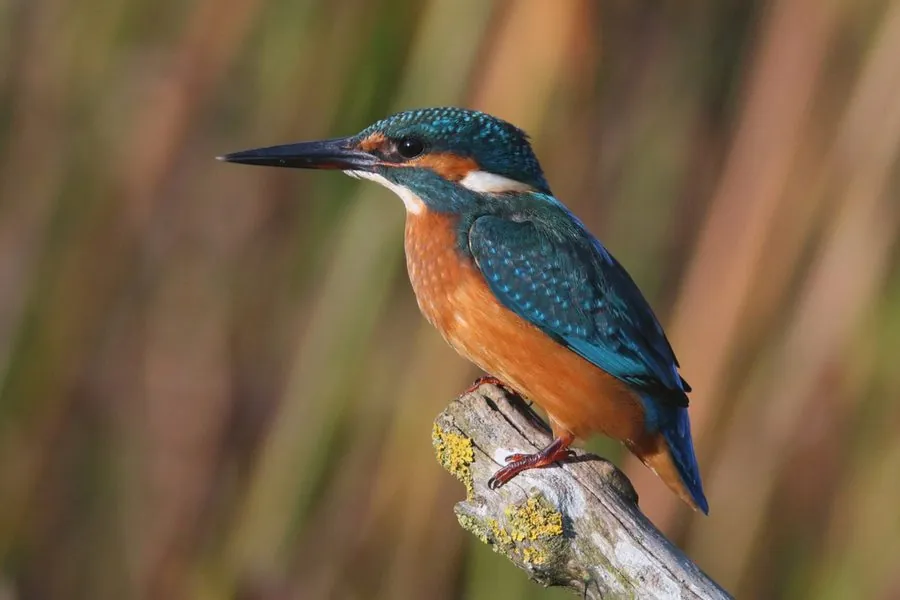

鸟类 · 动物界
普通翠鸟 Alcedo atthis

体形小巧、羽色蓝绿闪光的水边猎手，常长时间静立枝头，发现小鱼后急速俯冲入水，激起细碎水花。
- 分类
- 门脊索动物门纲鸟纲目佛法僧目科翠鸟科属翠鸟属
- 栖息环境
- 水清鱼多的溪流、河湖、池塘与水库岸边，需要有垂直土壁可挖洞营巢
- 地理分布
- 欧亚大陆、北非和东南亚，中国大部分地区有分布，北方多为候鸟
- 保护级别
- IUCN 无危（LC）；中国“三有”保护动物
物种志
普通翠鸟体长 16–17 cm，翼展 24–26 cm，体重 34–46 g，体型虽小却十分醒目。头颈和背部呈蓝绿色，在光线下闪烁金属光泽，密布浅蓝色细斑点，胸腹部为橙栗色，喉部白色。它的喙长而直、呈黑色，脚短小呈红色；雄鸟的喙全黑，雌鸟下喙基段为橙红色。
普通翠鸟广泛分布于欧亚大陆、北非和东南亚，中国大部分地区都能见到，北方种群有迁徙行为。它栖息在水清鱼多的溪流、河湖、池塘和水库岸边，常长时间停在低枝或石头上注视水面，发现小鱼后迅速俯冲入水捕捉，也吃虾、水生昆虫和蝌蚪。繁殖期在河岸垂直土壁上挖出长约 60–90 cm 的隧道状巢穴，每窝产卵 5–7 枚，孵化 19–21 天。由于对水质和岸边环境敏感，翠鸟常被视作水环境良好的指示物种，在中国属于“三有”保护动物。
形态与习性
- 食性小鱼、虾、水生昆虫和蝌蚪
- 体长16–17 cm
- 翼展24–26 cm
- 体重34–46 g
- 繁殖在土壁挖隧道营巢，每窝 5–7 枚卵，孵化 19–21 天
- 潜水俯冲入水后迅速振翅返回栖枝，捕鱼成功率不高
- 寿命野外约 4–6 年
趣味知识
- 翠鸟入水的瞬间会闭合眼部的透明瞬膜，像戴上一副“护目镜”。
- 它的羽毛并不含蓝色素，蓝绿色来自羽毛结构对光线的散射，属于结构色。
- 普通翠鸟的巢是河岸土壁上挖出的隧道，长度可达 90 cm。
- 雌雄翠鸟可凭下喙颜色区分：雄鸟全黑，雌鸟下喙呈橙红色。